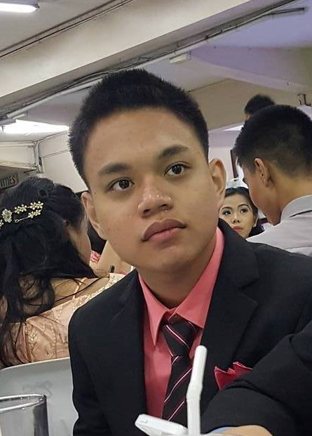
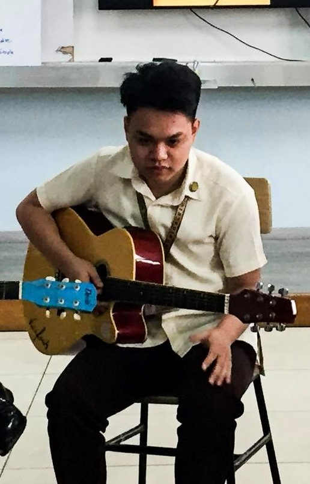
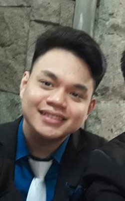
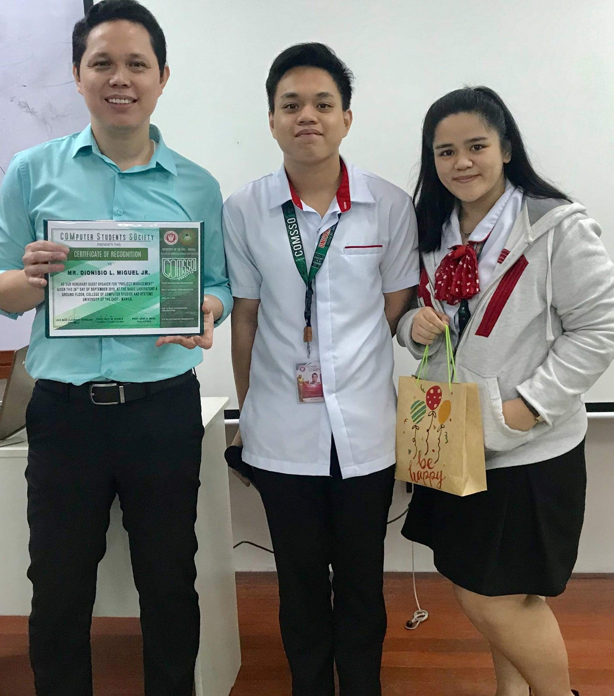
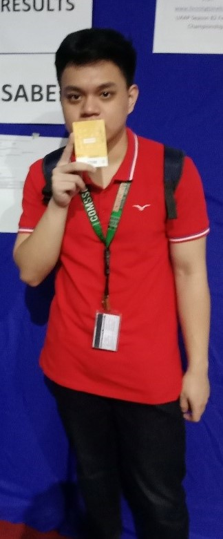
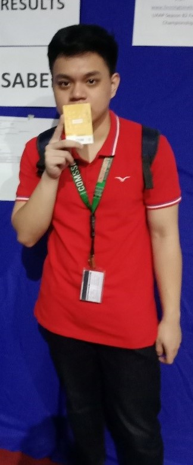

When i was a kid, i used to play a lot outside because we are living in a compound so it was a secured place for me to run around and something i want.1 Inside that compound I've met my friends which is as of today still is around.2 The people living in the compound were also my relatives so I am not worried visiting places to places also it was small that i will not get lost.3 Most of my childhood memories were made in the frontyard of my grandfather and grandmother.4 As a kid, it was so big for me so i play a lot around there.5 My imagination as a kid were so big, I used to play with sticks and stones just to create something that seems playable.6 I was also introduced to sports at a very young age, in that same frontyard I requested my father to make a basketball ring in there.7 After school, I play and practice a lot of basketball and sometimes I invited my friends to play.8 Due to this I joined basketball competitions in our compound and it was a fun experience to learn from.9 I also tried playing soccer but it was just for a while then I tried playing baseball.10 Playing baseball is so much fun because at first, me and my friend were joking around if we will play baseball in real life because of the game "baseball heroes" which was popular in facebook during that time.11 Then I started making baseball bats from scrap wood by carving it.12 I could not believe up until now that i have created a baseball bat when i was a kid.13 Then after a while, I also started creating gloves and baseball made of unused socks and it was a fun experience.14 Then started the time when we focused on computer games, we still play outside but not as much. Later on we were Introduced to waveboard.15 It was like a skateboard but you need balance more because there are two separated stepping pad that you need to alternately turn to keep moving forward.16 It was also due to this waveboard that my friend broke his arm, it was a horrifying experience to see.17 And so later on we moved on with it and goes back to playing computer games.18 During those times, I was also a player of our table tennis organization which was really popular in our compound.19 I joined many competitions and stepped in the NCR division but due to the excessive practices, I got bored of it and later dropping it.20
Go Top
Teenage Years
  During teenage years, I started going outside our compound for quiet a long time because this is the time that i want to explore something new.1 I also met a lot of new friends which became a friend of my childhood friends.2 The schools that my chilhood friends attended were the same as mine so we still have contact with each other in school.3 The sections were different though, I have never experienced being classmate with my childhood friends even though we were at the same school.4 Anyways, during this time I learned a lot from my new friends both good and bad.5 They pretty much not that different from my friends in the compound so they did not find it hard to befriend me.6 By the way, I was the new kid in that school because my friend started going there before I transferred because before I was studying at a different school.7 In this school, the population of students were pretty low and most of the time you see the same faces everyday.8 But due to this small amount of students, I was tasked to lead pretty much everything in those years. In those years, the school picked me as a leader of the drum and lyre.9 I was tasked to supervise and play the bass drum in that band.10 Also, during those years I learned how to play guitar and started practicing on my own with the a book that contained chords.11 Then came the time that I needed to transfer school because of the lack of students in that school.12 I transferred to the other school then joined the acoustic club.13 In this club, we are tasked to play in masses because my new school is a catholic school.14 And also during events we are tasked to do performances to hype up the crowd.15 Since the school offers table tennis in the intamurals, I joined and won second place both in grade 11 and in grade 12.16 During the last year in that school, our final project to pass and graduate was a capstone project. Since my strand is S.T.E.M, our capstone project was more on experimental.17 Our goal was to make charcoal out of coconut and other parts of coconut tree as a water filtration system.18 It was a lot of hardwork and nights of working, collecting materials and experimenting.19 At the first defense, we failed but pulled it off at the second attempt then our graduation was secured.20
Go Top
College Years
 

Now I am currently at second year college.1 During when I was a freshman, I was nervous on to what to expect in college.2 It was a new experience going on a commute everyday from Pateros to Manila.3 The average time going home from UE to here was 2 hours.4 It was pretty far and draining so i always seek for a good schedule where I can come home early.5 Eventhough these were the cases, I met amazing people that have helped me up until now.6 Too bad I can't explore that much places because I don't want to stay there at night.7 I've experienced so many times that it was hard to find a vehicle to go home when it was around 5 o' clock and so on.8 But since then, I have adapted and just go on with it.9 Since I came from a school that does not offer programming only in robotics which is a different case, I found it hard to simulate at first.10 But as the time passes by, I learned how to program in different languages.11 I've pushed myself to learn it and understand how it cycles.12 I also joined COMSSO when was a freshman and it was a new experience for me to run places and pass documents to different offices in the university.13 I was planning to leave the organization this coming third year because I want to focus on my studies more this time.14 The capstone project will start at third year so it is crucial for me to focus on it.15 Last year was so different, due to this pandemic and other calamities that have happened we are forced to stay home and it was something new not only for me but to many.16 Online conferences were a new thing and we are currently adapting.17 The strain of work is so much different, It may be not much draining for me than commuting but sitting for hours is really not that good.18 Also, the environment that we experience in a face to face meeting is gone for now.19 But the good thing is that we do not need to wake up so early.20
Go Top